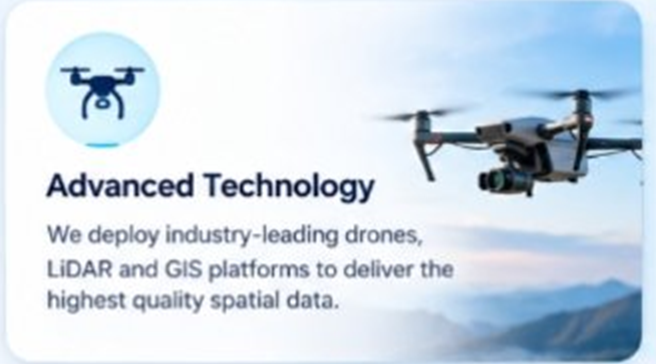
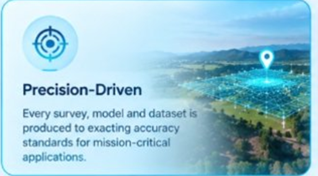
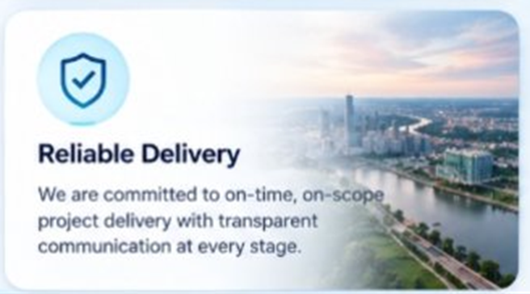
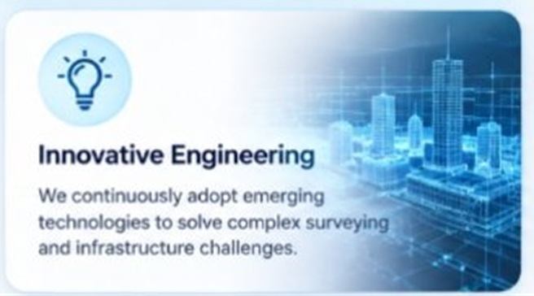

Ready to Transform Your Project?
Talk to our team about your surveying, mapping or engineering requirements. We deliver precision solutions for complex challenges.
Aerosparke Industries Private Limited delivers advanced drone technology, precision surveying, geospatial intelligence and innovative engineering solutions to transform industries and build a smarter future.
A glimpse into the surveys, inspections and geospatial missions we've delivered across India's most complex environments.

Delivered survey-grade data 4× faster than conventional methods

3D city model covering 650 km² delivered in 10 weeks

±0.5% volumetric accuracy across 12 active stockpile zones
We combine advanced drone technology and geospatial expertise to deliver insights and solutions that matter.






AEROSPARKe Industries Private Limited is a technology-driven company at the forefront of drone innovation, precision surveying and geospatial engineering — delivering intelligent solutions that transform how industries map, measure and manage the world around them.
AEROSPARKe was founded with a singular purpose — to harness advanced drone technology and geospatial intelligence to solve real-world challenges across infrastructure, industry and government.
We combine aerial platforms, LiDAR sensors, photogrammetry workflows and GIS expertise to deliver spatial data of the highest accuracy and reliability, from large-scale topographic surveys to smart city digital mapping.

AeroSpark is dedicated to delivering innovative drone technology, aerial surveying and intelligent geospatial solutions for modern industries.
To provide accurate, reliable and innovative aerial technology solutions that help businesses make smarter decisions and achieve operational excellence.
To become a trusted leader in drone technology and geospatial innovation, transforming the way industries capture, analyze and utilize aerial data.
We hold ourselves to the highest accuracy standards in every dataset, model and deliverable.
We continuously adopt emerging technologies and methodologies.
Complete transparency, honesty and professionalism in every engagement.
Work that exceeds expectations — in quality, timeliness and technical depth.
True partners with our clients, aligning our expertise to their goals.
Safe drone operations, regulatory compliance and responsible data practices.
From flight planning and acquisition to processing, analysis and final deliverables — managed in-house.
Professional-grade drone platforms, LiDAR sensors and GNSS systems.
DGCA certifications, GIS qualifications and domain expertise.
From a single-site survey to a multi-state infrastructure programme.
Streamlined pipelines for fast, accurate delivery.
Authorised to conduct drone survey operations across India.
Tell us about your project and our team will get back to you with a tailored solution.
Get In TouchFrom precision aerial surveys to intelligent GIS platforms, AEROSPARKe delivers the full spectrum of drone technology and geospatial engineering services — tailored to your industry and built to the highest standards.

High-resolution topographic data, orthomosaic maps and digital elevation models with centimetre-level accuracy using UAV platforms with RTK/PPK GNSS.

Millions of precise 3D measurements per second, penetrating vegetation canopy to reveal bare-earth terrain beneath.

We design, build and maintain GIS databases, web mapping portals and spatial analysis workflows for decision support.

Overlapping aerial photographs processed into accurate 3D models, orthomosaics and point clouds.

Engineering survey solutions for roads, highways, railways, pipelines and utility corridors, reducing field time dramatically.

Aerial mapping, LiDAR, GIS and digital twin technology for planners, municipal bodies and smart city mission teams.
Explore our detailed range of services tailored for your needs.
Understand your needs and project goals.
Plan safe and compliant operations.
Capture high-quality aerial data.
Deliver actionable insights and reports.
Let's turn your ideas into intelligent aerial solutions.

AEROSPARKe operates a fleet of professional-grade drone platforms, LiDAR sensors, GNSS systems and GIS software — giving every project the technical foundation it needs to deliver survey-grade results.

Enterprise-grade aerial workhorse
Our primary survey drone — 55-minute flight time, IP55 weather resistance and a triple-redundant flight control system.

Next-generation airborne LiDAR
Integrated LiDAR and RGB imaging system delivering dense point clouds with up to 5 returns per pulse, even through vegetation canopy.

Precision thermal intelligence from the air
Simultaneous RGB and infrared capture for solar panel inspection, power line surveys, industrial monitoring and search-and-rescue.

Centimetre-level ground truth
Professional multi-constellation receivers for GCP placement, base station setup and independent accuracy verification.

From raw data to intelligent deliverables
Industry-standard platforms trusted by survey professionals and government agencies worldwide.
RTK/PPK workflows deliver absolute positional accuracy of 1–3 cm without ground control points.
Multi-return LiDAR captures bare-earth terrain beneath dense forest and crop canopy.
Radiometric thermal imaging quantifies temperature anomalies for energy and industrial inspection.
A single Matrice 350 RTK mission can cover 500+ hectares per day at survey-grade accuracy.
IP55-rated platforms and redundant systems enable operations in rain, wind and challenging conditions.
Outputs integrate directly with ArcGIS, AutoCAD Civil 3D, BIM platforms and web GIS portals.
Our team is happy to discuss which platform and sensor combination is best suited to your project requirements.
Talk to Our TeamA portfolio of survey, mapping and geospatial engineering projects delivered across India — spanning national highway corridors, smart cities, open-cast mines, agricultural basins and critical infrastructure.
Flagship surveying and geospatial deployments delivering mission-critical outcomes across India's most demanding terrain.
Delivered survey-grade data 4× faster than conventional methods
3D city model covering 650 km² delivered in 10 weeks
±0.5% volumetric accuracy across 12 active stockpile zones
Filter through our complete project portfolio by category to explore verified deliverables and project outcomes.
Delivered survey-grade data 4× faster than conventional methods
3D city model covering 650 km² delivered in 10 weeks
±0.5% volumetric accuracy across 12 active stockpile zones

LULC maps at 5 cm GSD for crop health assessment

Bare-earth DTM beneath dense canopy — 98% ground point classification

Comprehensive GIS geodatabase with 40+ spatial layers
Monthly volumetric reports replacing 3-week manual survey cycles

1,247 faulty panels identified across 4,800 hectares in 3 days
Survey completed in 3 weeks vs. 4-month conventional estimate

Sub-centimetre 3D mesh models of 14 major temple structures

5 cm GSD orthomosaic and 1 m contour DEM in 4 days

Complete asset GIS database with 6,000+ tagged infrastructure items
Street-level asset inventory of 12,000+ urban infrastructure items
Let's turn your ideas into intelligent aerial solutions.
AEROSPARKe delivers precision drone survey, LiDAR mapping and GIS solutions to a wide range of industries — from national highway corridors and smart city missions to open-cast mines and solar farms.
Tell us about your project and we'll recommend the right survey solution for your requirements.
Get in TouchJoin a team of engineers, surveyors and GIS specialists pushing the boundaries of drone technology and spatial data across India.
View Open PositionsWork with the latest drone platforms, LiDAR sensors and GIS software on projects that matter.
Your work shapes infrastructure, cities and land management across 18+ states in India.
Structured training, certifications and a clear career path in a fast-growing industry.
A tight-knit team where every voice counts and ideas are welcomed at every level.
Exciting field deployments combined with deep technical work at our processing centres.
Market-leading salaries, performance incentives and comprehensive benefits.
We are actively hiring across the following roles. Don't see a perfect fit? Apply anyway — we always want to hear from talented people.
Hyderabad / Pan-India · 2–5 years
Hyderabad · 2–4 years
Hyderabad · 3–6 years
Pan-India (Project-based) · 3–7 years
Hyderabad / Remote · 2–5 years
Hyderabad · Final year / Recent graduate
Fill in the form below and our HR team will be in touch. You can also attach your CV by email to careers@aerosparke.com after submitting.
AEROSPARKe Industries delivers breathtaking aerial cinematography — from golden-hour real estate reels to large-scale film productions and live event coverage.
Our cinematography team combines DGCA-certified pilots, cinema-grade stabilised gimbals and cutting-edge drone platforms to capture footage that moves audiences — from sweeping landscape reveals to dramatic tracking shots and live event aerials.
Cinematic aerial sequences for feature films, web series, documentaries and OTT productions.
Sweeping aerials, orbit shots and reveal sequences that elevate listings and architectural portfolios.
Weddings, concerts, sporting events and corporate gatherings from a perspective no ground camera can match.
Aerial footage of facilities, campuses and operations for investor reels, CSR films and campaigns.
Immersive aerial content for resorts, heritage sites, national parks and travel destinations.
High-resolution aerial video for progress reporting and stakeholder communications.


Professional Cinema Drone
Full-frame X9-8K Air gimbal, 8K RAW, 360° rotation, dual-operator support
Cinema Camera Payload
Full-frame / Super 35, RAW video, interchangeable lenses
Agile Cinematography
4/3" CMOS, 6K, Hasselblad colour science
Dynamic & Immersive Shots
High-speed tracking, tight spaces, creative angles
Bespoke Mission Platform
In-house engineered airframe, mission-specific payload integration, extended endurance
Transparent packages built for every production scale. All packages include DGCA-certified pilots and full insurance coverage. All prices are indicative.
Perfect for listings & social content
On RequestTurnaround: 48 hours
Ideal for events, real estate & corporate
On RequestTurnaround: 5 business days
End-to-end for films, OTT & brand films
On RequestTurnaround: As per project brief
Bespoke solutions for unique requirements
On RequestTurnaround: Discussed on consultation
Tell us about your project and we'll craft a custom aerial cinematography plan that fits your brief, timeline, and budget.
Get in TouchWhether you need a topographic survey, LiDAR mapping, GIS analysis or a full geospatial solution — our team is ready to help. Reach out and we'll respond within one business day.
Whether you need a topographic survey, LiDAR mapping, GIS analysis or a full geospatial solution — our team is ready to help.
Aerosparke Industries Pvt Ltd
Plot No 22, No.1/299, Alasanatham Rd, Shanthi Nagar, VASTHUSALA, Hosur, Tamil Nadu 635109
Monday – Sunday:
8:00 AM – 5:00 PM
Fill in the details below and our team will get back to you with a tailored proposal.